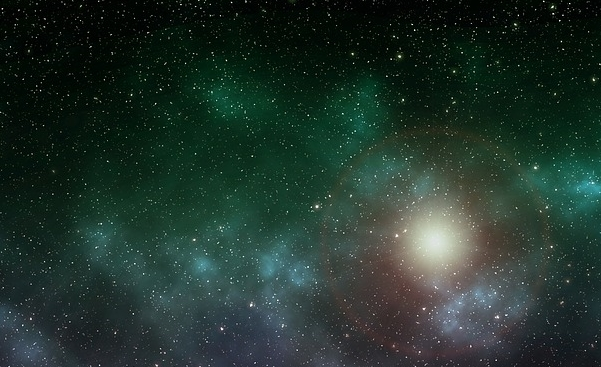

Dit gaat over mijn favoriete onderwerp
HomePage

mijn onderwerp is de ruimte.
Ik vind de ruimte gaaf omdat er heel veel mysteries en nieuwe dingen te ontdekken zijn.
Hier is wat informatie over de ruimte.
De term ruimte wordt in de astronomie over het algemeen gebruikt om delen van het heelal buiten de Aarde, het zonnestelsel of andere hemellichamen aan te geven, of meer algemeen de relatief "lege" delen van het heelal.
Dit is met name de intergalactische ruimte. Termen als ruimtevaart en ruimtesonde verwijzen ook naar dit gebruik van de term ruimte.
Met de intergalactische ruimte wordt specifiek de ruimte tussen twee sterrenstelsels bedoeld, bijvoorbeeld tussen de Melkweg en de Andromedanevel.
Doordat de over het hele heelal verspreide sterrenstelsels heel ver uit elkaar liggen, maakt de intergalactische ruimte veruit het grootste deel van het heelal zelf uit.
Zo is bijvoorbeeld de doorsnede van de Melkweg "slechts" zo'n 150.000 lichtjaar, terwijl het dichtstbijzijnde sterrenstelsel, de Andromedanevel, pas op een afstand van zo'n 2,2 miljoen lichtjaar ligt.
Doordat de intergalactische ruimte zo groot is, is de dichtheid binnen het heelal zeer laag en daarmee ook de zwaartekracht.
Dit maakt het mogelijk dat de toename van het heelal voor onbepaalde tijd door kan gaan.